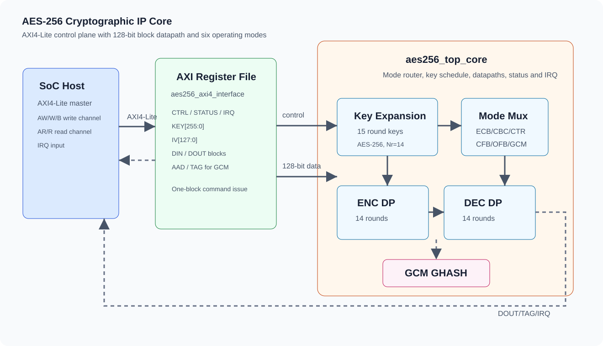
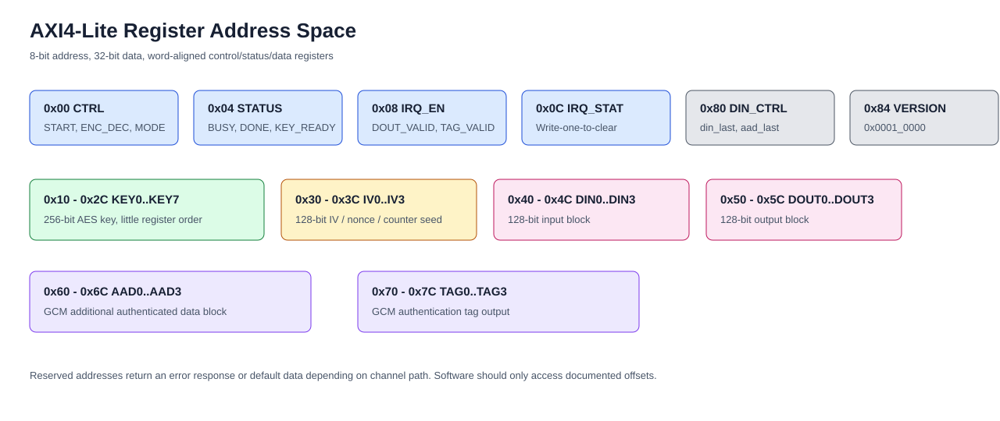
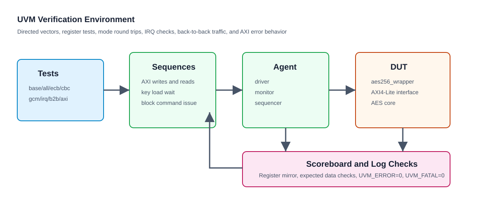

Overview
This IP implements an AES-256 hardware accelerator intended for SoC and FPGA integration. The software-facing wrapper exposes a compact AXI4-Lite register map, while the internal core uses a 128-bit block datapath, AES-256 key expansion, and per-mode processing blocks.
Operating Modes
ECB, CBC, CTR, CFB, OFB, and GCM are decoded from the 3-bit mode field.
AES Rounds
AES-256 uses 14 algorithm rounds with expanded round keys held inside the core.
Register Width
The control plane uses 32-bit AXI4-Lite words and an 8-bit address space.
Architecture
The top-level wrapper contains an AXI4-Lite register interface and an AES core. Software programs key, IV, input data, AAD, mode, direction, and interrupt enable bits through the register map. The register interface issues one-block commands to the core and captures output blocks and GCM tags for software reads.

Control Plane
aes256_axi4_interface decodes AXI4-Lite reads and writes, stores key/IV/data
words, exposes status and IRQ state, and presents command strobes to the core.
Data Plane
aes256_top_core expands the 256-bit key, routes traffic to the selected
mode engine, and returns a 128-bit result block with valid/last signaling.
Top Interface
The integration boundary is aes256_wrapper. Clock and reset use
i_aes_aclk and active-low asynchronous reset i_aes_aresetn.
The host interface is AXI4-Lite with one interrupt output.
| Group | Signals | Description |
|---|---|---|
| Clock/reset | i_aes_aclk, i_aes_aresetn |
Single synchronous clock domain with active-low reset. |
| Write address/data | AWADDR/AWVALID/AWREADY, WDATA/WSTRB/WVALID/WREADY |
AXI4-Lite write command and data channels. |
| Write response | BRESP/BVALID/BREADY |
Write completion and response status. |
| Read address/data | ARADDR/ARVALID/ARREADY, RDATA/RRESP/RVALID/RREADY |
AXI4-Lite read command and data channels. |
| Interrupt | o_aes_irq |
Asserted when enabled output-data or GCM-tag events are pending. |
Register Map
All registers are 32-bit wide and word aligned. Multiword fields are exposed as consecutive 32-bit words: key uses eight words, while IV, DIN, DOUT, AAD, and TAG use four words each.

| Address | Name | Access | Description |
|---|---|---|---|
0x00 | CTRL | RW | Start, direction, and mode control. |
0x04 | STATUS | RO | Busy, done, key-ready, and error status. |
0x08 | IRQ_EN | RW | Interrupt enable bits. |
0x0C | IRQ_STAT | RW1C | Interrupt pending bits, write one to clear. |
0x10-0x2C | KEY0..KEY7 | WO/RW | 256-bit AES key. |
0x30-0x3C | IV0..IV3 | WO/RW | 128-bit IV, nonce, or counter seed. |
0x40-0x4C | DIN0..DIN3 | WO/RW | 128-bit plaintext or ciphertext input block. |
0x50-0x5C | DOUT0..DOUT3 | RO | 128-bit output block. |
0x60-0x6C | AAD0..AAD3 | WO/RW | GCM additional authenticated data block. |
0x70-0x7C | TAG0..TAG3 | RO | 128-bit GCM authentication tag. |
0x80 | DIN_CTRL | RW | Data-last and AAD-last block markers. |
0x84 | VERSION | RO | IP version, currently 0x0001_0000. |
CTRL Register
| Bits | Name | Description |
|---|---|---|
[0] | START | Write one to issue a block command after key, IV, and data are programmed. |
[1] | ENC_DEC | 1 selects encryption, 0 selects decryption for supported modes. |
[4:2] | MODE | Mode encoding: ECB=0, CBC=1, CTR=2, CFB=3, OFB=4, GCM=5. |
[31:5] | RESERVED | Write zero and ignore on read. |
STATUS and IRQ Bits
| Register | Bit | Name | Description |
|---|---|---|---|
| STATUS | 0 | BUSY | Core is processing or key expansion is not ready. |
| STATUS | 1 | DONE | Output block or tag event has completed. |
| STATUS | 2 | KEY_READY | Expanded key is available for block processing. |
| STATUS | 3 | ERR | Reserved error indicator. |
| IRQ_EN/IRQ_STAT | 0 | DOUT_VALID | Output data valid event. |
| IRQ_EN/IRQ_STAT | 1 | TAG_VALID | GCM tag valid event. |
Programming Model
Software operates the IP as a register-driven block accelerator. Program key material first, wait for key expansion, then issue one 128-bit block command at a time.
1. Write CTRL with START=0, ENC_DEC, and MODE.
2. Write KEY0..KEY7.
3. Poll STATUS.KEY_READY until it is set.
4. For IV-based modes, write IV0..IV3.
5. For GCM, optionally write AAD0..AAD3 and set DIN_CTRL.aad_last.
6. Write DIN0..DIN3 and set DIN_CTRL.din_last as needed.
7. Write CTRL.START=1 with the selected ENC_DEC and MODE.
8. Poll STATUS.DONE or wait for o_aes_irq.
9. Read DOUT0..DOUT3. For GCM, read TAG0..TAG3 when tag IRQ is pending.
10. Clear IRQ_STAT by writing one to pending bits.din_last on the final block of the message.
Modes
| Encoding | Mode | IV Required | Direction Support | Notes |
|---|---|---|---|---|
0b000 | ECB | No | Encrypt and decrypt | Independent block transform. |
0b001 | CBC | Yes | Encrypt and decrypt | Chained block mode using the previous ciphertext block. |
0b010 | CTR | Yes | Symmetric stream transform | Counter-mode keystream generation. |
0b011 | CFB | Yes | Symmetric stream transform | Feedback mode using AES encryption datapath. |
0b100 | OFB | Yes | Symmetric stream transform | Output feedback keystream generation. |
0b101 | GCM | Yes | Authenticated encryption flow | CTR-style data path with GHASH tag generation. |
Timing
The core is an iterative implementation optimized for compact RTL and deterministic control. Key expansion must complete before input blocks are submitted.
Key Expansion
Generates 15 round keys for AES-256. Software should poll STATUS.KEY_READY.
Block Latency
One 128-bit input block is processed through a 14-round AES datapath.
Interrupt Latency
IRQ_STAT.DOUT_VALID or IRQ_STAT.TAG_VALID is set when the corresponding result is captured.
Verification
The verification environment is organized as a UVM AXI4-Lite testbench with agent, driver, monitor, scoreboard, reusable sequences, and directed tests.

| Test | Purpose |
|---|---|
aes256_reg_test | Reset values, version read, register access, and unmapped access behavior. |
aes256_ecb_vector_test | AES-256 ECB known-answer encryption/decryption vector. |
aes256_cbc_roundtrip_test | CBC encrypt-to-decrypt round trip with key and IV reload. |
aes256_modes_roundtrip_test | Round-trip coverage for ECB, CBC, CTR, CFB, and OFB. |
aes256_gcm_smoke_test | GCM data output, tag output, and tag interrupt smoke coverage. |
aes256_irq_test | Data-valid interrupt enable, pending, and write-one-to-clear behavior. |
aes256_b2b_test | Back-to-back register-driven block commands. |
aes256_axi_error_test | AXI response behavior for invalid or edge-case accesses. |
aes256_all_test | Regression wrapper for the directed suite. |
make lint
make compile
make run UVM_TEST=aes256_all_test
make run UVM_TEST=aes256_ecb_vector_test
make coverage UVM_TEST=aes256_all_testCurrent local regression status: UVM_ERROR = 0, UVM_FATAL = 0 after running the ModelSim UVM flow.
Integration Notes
Reset and Clock
Drive i_aes_aresetn low during system reset. All AXI and core state must be
considered invalid until reset is released and software initializes the register set.
AXI4-Lite Access
Use 32-bit aligned writes. Program all words of a multiword field before asserting
CTRL.START.
Interrupt Handling
Enable desired event bits in IRQ_EN. On interrupt, read IRQ_STAT,
service DOUT/TAG registers, then clear pending bits with write-one-to-clear.
Security Hygiene
The current RTL is a functional cryptographic accelerator. Production deployments should add side-channel analysis, key zeroization policy, fault response, and full NIST vector coverage.
Deliverables
| Path | Description |
|---|---|
rtl/ | Synthesizable AES-256 RTL, mode engines, AXI wrapper, and package. |
inc/ | Register map, mode encoding, field definitions, and IP version macros. |
uvm/ | UVM verification environment, sequences, tests, scoreboard, and testbench top. |
Makefile | Verilator lint and ModelSim compile/run/coverage flow. |
docs/ | GitHub Pages documentation site. |
GitHub Pages Setup
Repository Settings
Pages
Build and deployment: Deploy from a branch
Branch: main
Folder: /docs